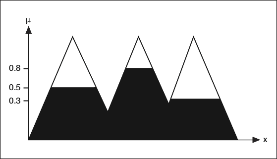
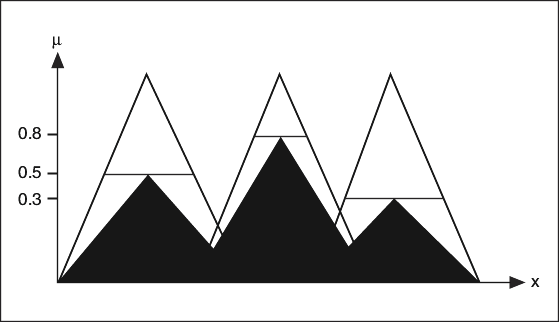

A fuzzy controller uses a consequent implication method to scale the membership functions of each output linguistic variable based on the corresponding rule weight before performing defuzzification.
With PID and Fuzzy Logic VIs, you can use either the Minimum or Product consequent implication method.
In the Minimum implication method, the fuzzy logic controller truncates the output membership functions at the value of the corresponding rule weights. For example, if an output linguistic variable has three membership functions with rule weights 0.5, 0.8, and 0.3, respectively, the scaled membership functions might appear similar to the following image.

In the Product implication method, the fuzzy logic controller scales the output membership functions at the value of the corresponding rule weights. For example, if an output linguistic variable has three membership functions with rule weights 0.5, 0.8, and 0.3, respectively, the scaled membership functions might appear similar to the following image.
